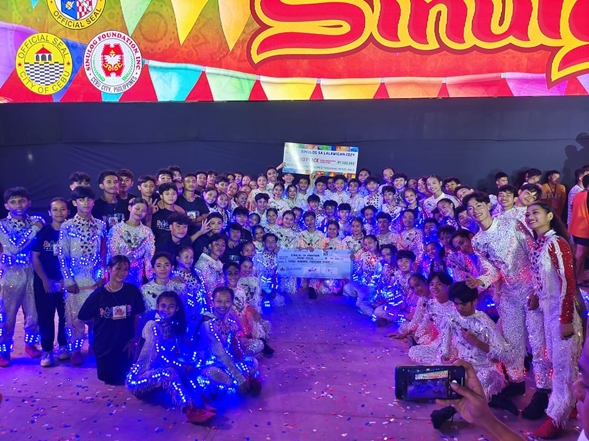

-
Celebrates Every 3rd Week of January
- The festival includes religious processions, novena masses, and vibrant street dancing featuring performers in colorful costumes. These dancers move to the rhythmic beat of drums, trumpets, and gongs, mimicking the traditional Sinulog dance that signifies the historical and spiritual journey of the Santo Niño. The event serves as an expression of faith, gratitude, and cultural pride, uniting residents and visitors in celebration. In addition to the religious and cultural activities, the Sinulog Festival in Naga City often features community gatherings, trade fairs, and live entertainment, making it both a spiritual and festive occasion. It provides an opportunity for the community to honor their devotion while showcasing their rich cultural heritage.
